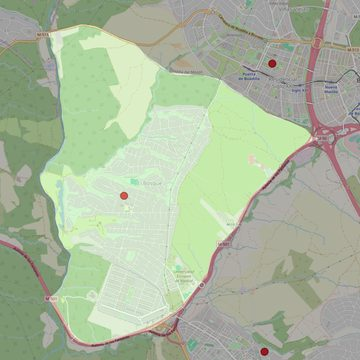

Santísima Trinidad
- Arciprestazgo
- Villaviciosa de Odón
- Población
- Villaviciosa de Odón
- Dirección postal
- c/ Bidasoa, 1 (Urb. "El Bosque")
- Código postal
- 28670
- Extensión
- 18,39 km² (1.839 ha)
- Teléfono
- 639 147 603
- Correo electrónico
- santisimatrinidad-villaviciosa@diocesisgetafe.es
- Información demográfica
- De la parroquia · De la población (Villaviciosa de Odón) · Del arciprestazgo (Villaviciosa de Odón)


Descargar mapaLímites según decreto
"Partiendo de la confluencia de la carretera C-501 (a Brunete) con la carretera C-511 (a Boadilla del Monte), arrancan por el eje de la carretera C-511 (en dirección noreste) hasta el término municipal de Boadilla del Monte; siguen por los límites de los términos municipales de Villaviciosa de Odón y Boadilla del Monte (en dirección noroeste), de Villaviciosa de Odón y Villanueva de la Cañada (en dirección sur), de Villaviciosa de Odón y Brunete (en dirección sur) hasta la carretera C-501; continúan por el eje de la carretera C-501 hasta la confluencia con la carretera C-511, punto de partida"
(Decreto de erección de 30-5-99; Boletín de junio de 1999, pág. 645)
Desarrollos urbanísticos previstos
- Villaviciosa de Odón: sector UZ-4: 1.000 viviendas · previsión a 2030-2045 · el 99,3 % de su superficie está en esta parroquia
Las cifras y sus fuentes están en la ficha de cada desarrollo, en la sección «Previsión de desarrollos urbanísticos».